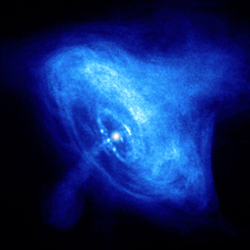
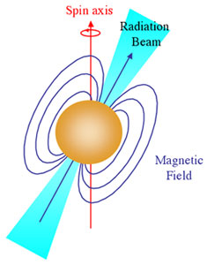

Neutron stars comprise one of the possible evolutionary end-points of high mass stars. Once the core of the star has completely burned to iron, energy production stops and the core rapidly collapses, squeezing electrons and protons together to form neutrons and neutrinos. The neutrinos easily escape the contracting core but the neutrons pack closer together until their density is equivalent to that of an atomic nucleus. At this point, the neutrons occupy the smallest space possible (in a similar fashion to the electrons in a white dwarf) and, if the core is less than about 3 solar masses, they exert a pressure which is capable of supporting a star. For masses larger than this, even the pressure of neutrons cannot support the star against gravity and it collapses into a stellar black hole. A star supported by neutron degeneracy pressure is known as a ‘neutron star’, which may be seen as a pulsar if its magnetic field is favourably aligned with its spin axis.
Neutrons stars are extreme objects that measure between 10 and 20 km across. They have densities of 1017 kg/m3(the Earth has a density of around 5×103 kg/m3 and even white dwarfs have densities over a million times less) meaning that a teaspoon of neutron star material would weigh around a billion tonnes. The easiest way to picture this is to imagine squeezing twice the mass of the Sun into an object about the size of a small city! The result is that gravity at the surface of the neutron star is around 1011 stronger than what we experience here on Earth, and an object would have to travel at about half the speed of light to escape from the star.

Credit: NASA/CXC/ASU/J. Hester et al.
Born in a core-collapse supernova explosion, neutron stars rotate extremely rapidly as a consequence of the conservation of angular momentum, and have incredibly strong magnetic fields due to conservation of magnetic flux. The relatively slowing rotating core of the massive star increases its rotation rate enormously as it collapses to form the much smaller neutron star. This is analogous to the increased spin of an iceskater if she concentrates her mass around her spin axis by bringing her arms close to her body. At the same time, the magnetic field lines of the massive star are pulled closer together as the core collapses. This intensifies the magnetic field of the star to around 1012 times that of the Earth.
The result is that neutron stars can rotate up to at least 60 times per second when born. If they are part of a binary system, they can increase this rotation rate through the accretion of material, to over 600 times per second! Neutron stars that have lost energy through radiative processes have been observed to rotate as slowly as once every 8 seconds while still maintaining radio pulses, and neutron stars that have been braked by winds in X-ray systems can have rotation rates as slow as once every 20 minutes. Observations also reveal that the rotation rate of isolated neutron stars slowly changes over time, generally decreasing as the star ages and rotational energy is lost to the surroundings through the magnetic field (though occasionally glitches are seen). An example is the Crab pulsar, which is slowing its spin at a rate of 38 nanoseconds per day, releasing enough energy to power the Crab nebula.

Astronomers measure these rotation rates by detecting electromagnetic radiation ejected through the poles of the magnetic field. These magnetic poles are generally misaligned with the rotation axis of the neutron star and so the radiation beam sweeps around as the star rotates. This is much the same as the beam of light from a lighthouse sweeping around. If the Earth lies in the path of the beam, we see the neutron star/pulsar. If not, we see only the supernova remnant. This also nicely accounts for the fact that we do no see a pulsar in every supernova remnant.
Neutron stars do not necessarily exist in isolation, and those that form part of a binary system usually emit strongly in X-rays. X-ray binaries typically result from the transfer of material from a main sequence companion onto the neutron star, while short-duration gamma ray bursts are thought to result from the merger of two neutron stars.
The existence of neutron stars as a result of supernova explosions was tentatively predicted in 1933, one year after the discovery of the neutron as an elementary particle. However, it was not until 1967 that Jocelyn Bell observed the periodic pulses of radio emission characteristic of pulsars. There are now over 1,300 neutron stars known and about 105 predicted to exist in the disk of the Milky Way.